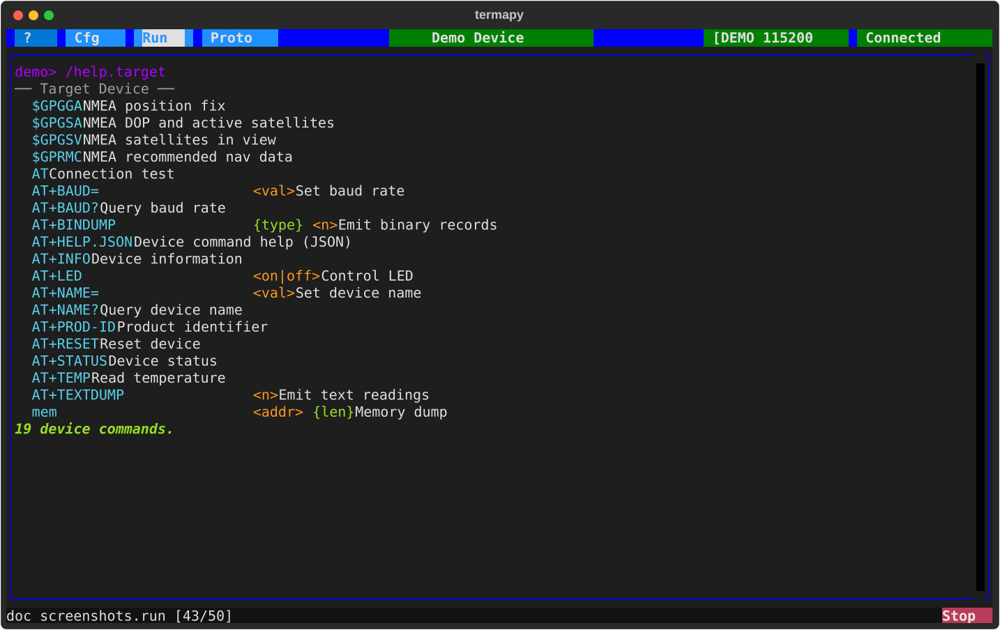

Device Help Integration¶
If your target device can return a JSON description of its commands,
termapy will include them and make them available in autocomplete
and /help -- so the device feels integrated into the terminal.
How It Works¶
- You add a command to your firmware that returns a JSON object
- You set
device_json_cmdin your termapy config to the command name - On connect, termapy sends the command, parses the JSON, and registers the device commands for suggestions and help
The included commands are not REPL commands -- you type them as
normal device commands. They just get autocomplete and show up in
/help under the Target Device section.
This also means your device doesn't need its own help command or help display logic. The JSON response is a lightweight data dump -- termapy handles the formatting, searching, and display. One small JSON handler replaces a full help system on the device side.
JSON Format¶
Your device command must return a JSON object with a commands key:
{"commands": {"AT+INFO": {"help": "Device information", "args": ""}, "AT+LED": {"help": "Control LED", "args": "<on|off>"}}}
Each command entry has:
help(required) -- one-line descriptionargs(optional) -- argument spec, defaults to empty
The JSON can be a single line or pretty-printed. Termapy scans the
response for the first { and parses from there, so preamble text
(echo, status messages) before the JSON is fine.
Config¶
Set device_json_cmd in your .cfg file:
When this is set, /include runs automatically on connect. The
result is cached to .target_menu.json in your config folder so
subsequent connects load instantly without querying the device.
Commands¶
| Command | Description |
|---|---|
/include |
Include from cache or device (auto on connect) |
/include.reload |
Force re-include from device, update cache |
/include.list |
List included commands |
/include.dump |
Pretty-print the included JSON |
/include.clear |
Remove included commands and delete cache |
/help.target |
Show only the target device commands |
Implementing on Your Device¶
The simplest implementation: add a command that prints a JSON string to the serial port. For an AT command set, something like:
if (strcmp(cmd, "AT+HELP.JSON") == 0) {
printf("{\"commands\":{");
printf("\"AT+INFO\":{\"help\":\"Device info\",\"args\":\"\"},");
printf("\"AT+TEMP\":{\"help\":\"Read temperature\",\"args\":\"\"},");
printf("\"AT+LED\":{\"help\":\"Control LED\",\"args\":\"<on|off>\"}");
printf("}}\r\n");
}
Or build it from your command table at runtime so it stays in sync.
The JSON format has a top-level commands key to allow future
expansion (device options, protocol settings, etc.) without breaking
existing implementations.
Demo¶

The demo device includes AT+HELP.JSON. Run the demo and type
/help.target to see it in action, or /include.dump to see the
raw JSON.